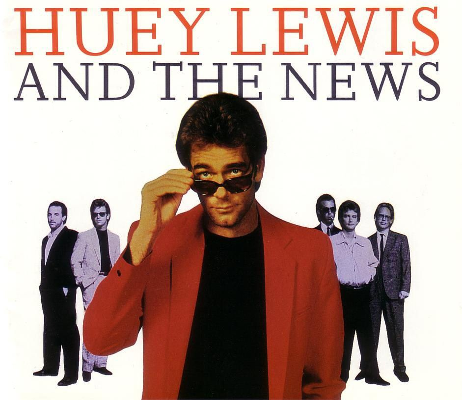

Huey Lewis and the News is an American rock band based in San Francisco, California. They had a run of hit singles during the 1980s and early 1990s, eventually achieving 19 top ten singles across the Billboard Hot 100, Adult Contemporary, and Mainstream Rock charts.
Their early work was a little too new wave for my taste. But when Sports came out in '83, I think they really came into their own, commercially and artistically. The whole album has a clear, crisp sound, and a new sheen of consummate professionalism that really gives the songs a big boost. He's been compared to Elvis Costello, but I think Huey has a far more bitter, cynical sense of humor.
In '87, Huey released this; Fore!, their most accomplished album. I think their undisputed masterpiece is "Hip To Be Square". A song so catchy, most people probably don't listen to the lyrics. But they should, because it's not just about the pleasures of conformity and the importance of trends. It's also a personal statement about the band itself. -Patrick Batemen